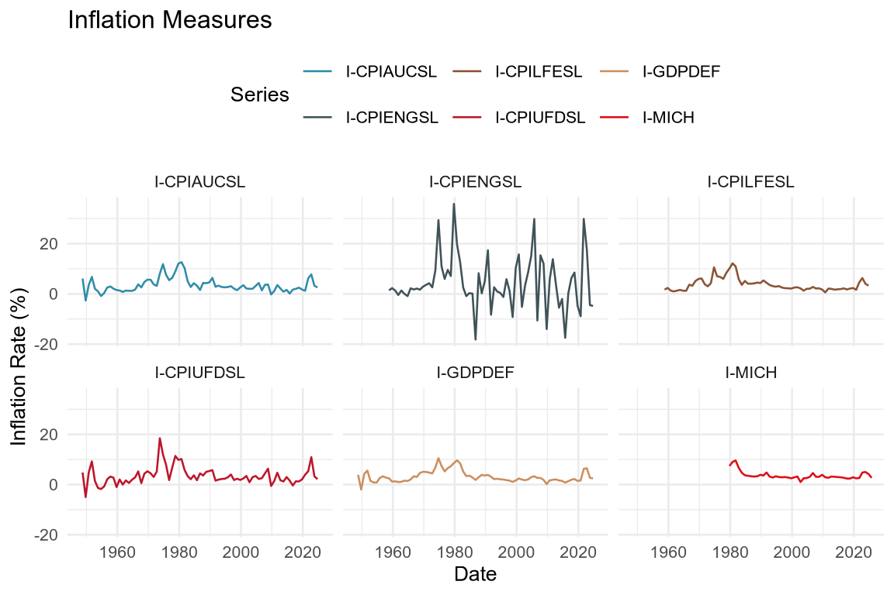
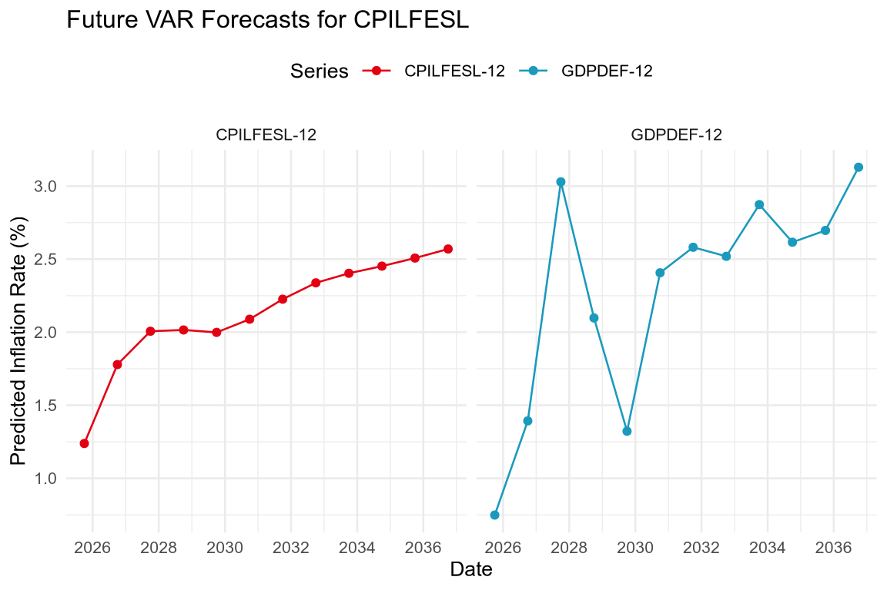
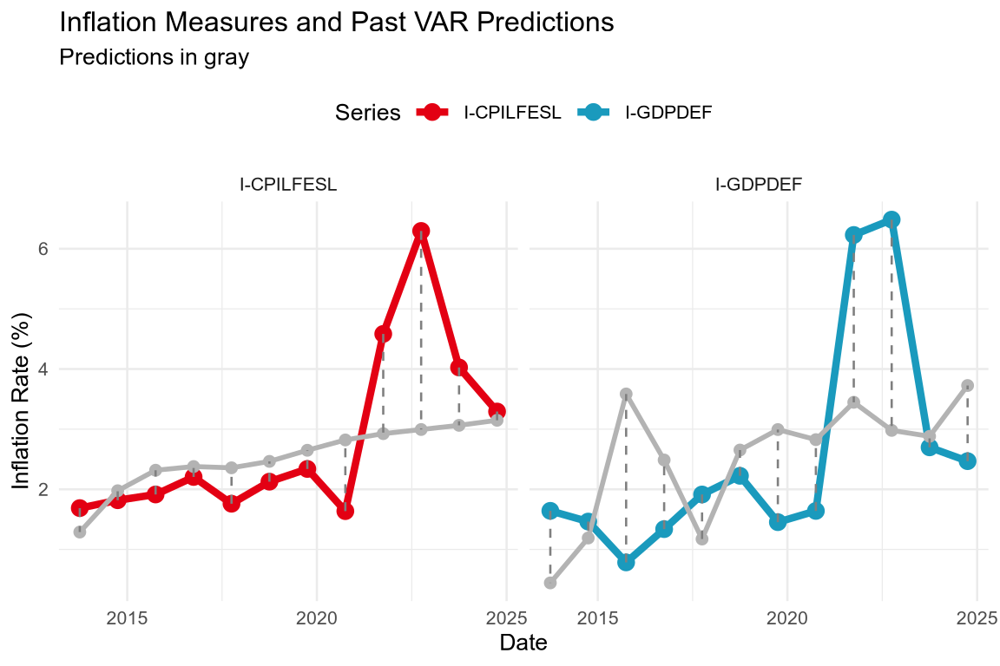
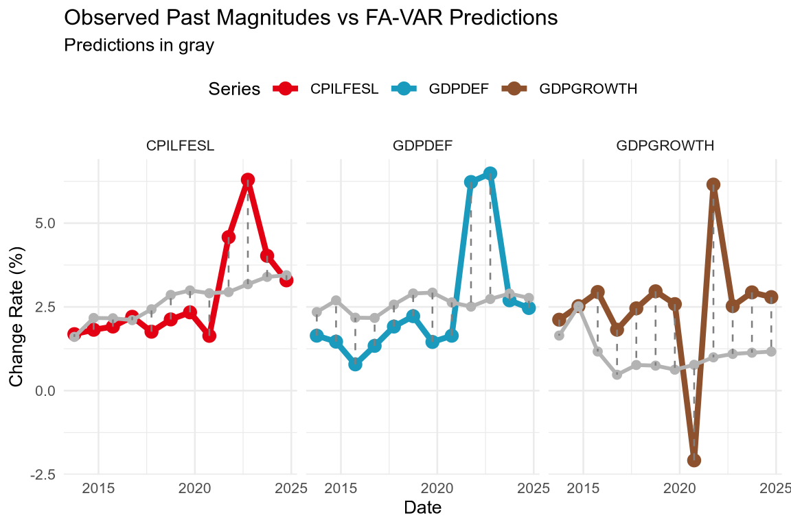
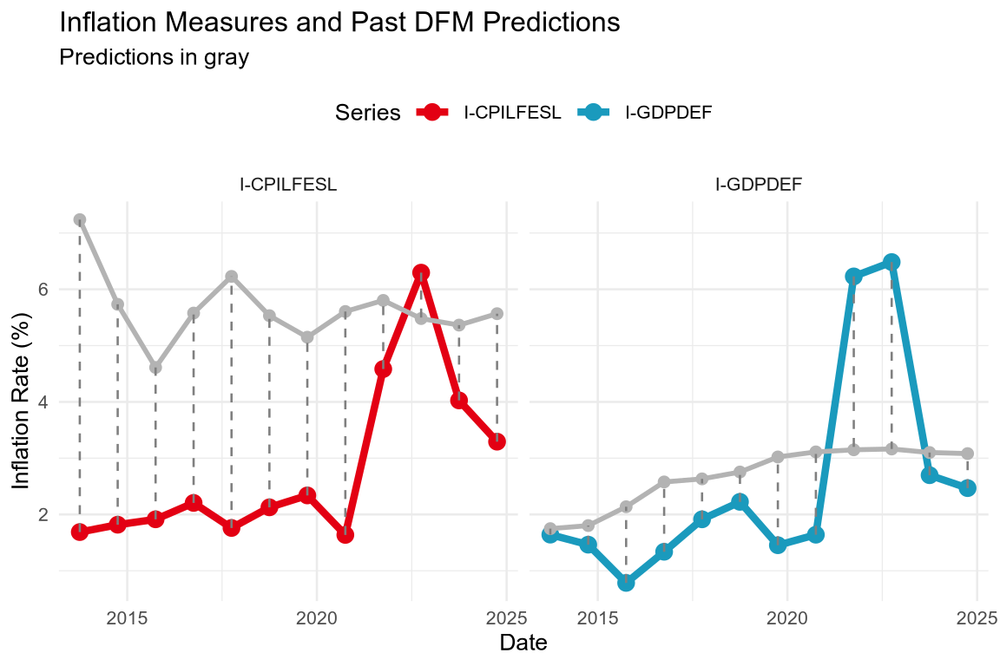

run_models <- FProblem Set 1
Problem
Recent headlines emphasize the challenges faced by central banks: inflation remains persistent in the U.S., global supply chain uncertainties continue, and growth forecasts remain fragile amid geopolitical risks.
Goal
Provide policy recommendations for the Federal Reserve (Fed) new forecasting system.
GitHub repository
All the codes and data for this problem set are available in the GitHub repository: https://github.com/pachadotdev/ecod025
Technical note
For this problem set, the models were written in C++ using the Armadillo library for linear algebra (Sanderson and Curtin 2016; Sanderson 2024).
To run the model functions, you need to change this boolean to “TRUE”, otherwise when rendering the file it will load pre-computed results.
The functions were made available in the R package ecod025ps1 which can be installed from this same repository:
if (!require("ecod025ps1") && run_models) {
repository <- "https://cran.rstudio.com"
if (!require("pak")) install.packages("pak", repos = repository)
pak::pkg_install("pachadotdev/ecod025/ecod025ps1")
if (!require("dynlm")) install.packages("dynlm")
}
if (run_models) {
library(ecod025ps1)
library(dynlm)
}R package for accessing the data:
if (!require("alfred")) install.packages("alfred")
library(alfred)Additional packages for data manipulation and plotting:
if (!require("dplyr")) install.packages("dplyr")
if (!require("lubridate")) install.packages("lubridate")
if (!require("rlang")) install.packages("rlang")
if (!require("purrr")) install.packages("purrr")
if (!require("ggplot2")) install.packages("ggplot2")
if (!require("tintin")) install.packages("tintin")
library(dplyr)
library(lubridate)
library(rlang)
library(purrr)
library(ggplot2)
library(tintin)Models
Vector Autoregressions (VAR)
\(\text{VAR}(p)\) for inflation (\(\pi_t\)) and growth (\(g_t\)):
\[ y_t = A_1 y_{t-1} + \ldots + Ap y_{t-p} + u_t,\: y_t = [\pi_t, g_t]^T. \]
Factor-Augmented VAR (FA-VAR)
\[ \begin{aligned} X_t &= \Lambda F_t + e_t, \cr F_t &= \Phi_1 F_{t-1} + \ldots + \Phi_p F_{t-p} + v_t, \cr y_t &= B(L)y_{t-1} + C(L)F_{t} + u_t \end{aligned} \]
Dynamic Factor Model (DFM)
\[ \begin{aligned} X_t &= \Lambda F_t + e_t,\: e_t \sim N(0, R), \cr F_t &= AF_{t-1} + \eta_t,\: \eta_t \sim N(0, Q). \end{aligned} \]
Forecast Comparison Metrics
Root Mean Squared Forecast Error (RMSFE)
\[ \text{RMSFE} = \sqrt{\frac{1}{T} \sum_{t=1}^{T} (y_{t+h} - \hat{y}_{t+h \mid t})^2}. \]
Mean Absolute Error (MAE)
\[ \text{MAE} = \frac{1}{T} \sum_{t=1}^{T} |y_{t+h} - \hat{y}_{t+h \mid t}|. \]
Data
Get the different series used to measure inflation according to FED:
try(dir.create("data"), silent = TRUE)
download_data <- function(series_id) {
fout <- paste0("data/", series_id, ".rds")
if (!file.exists(fout)) {
data <- get_alfred_series(series_id)
data <- as_tibble(data)
saveRDS(data, fout, compress = "xz")
} else {
data <- readRDS(fout)
}
return(data)
}
# Consumer Price Index for All Urban Consumers: All Items
cpiaucsl <- download_data("CPIAUCSL")
# Consumer Price Index for All Urban Consumers: All Items Less Food & Energy
cpilfesl <- download_data("CPILFESL")
# Consumer Price Index for All Urban Consumers: Energy
cpiengsl <- download_data("CPIENGSL")
# Consumer Price Index for All Urban Consumers: Food
cpifood <- download_data("CPIUFDSL")
# GDP Deflator
gdpdef <- download_data("GDPDEF")We also require the ‘University of Michigan: Inflation Expectation (Median expected price change next 12 months)’ as a covariate:
# University of Michigan: Inflation Expectation (Median expected price change next 12 months)
michigan <- download_data("MICH")Data preparation
We need to filter and differentiate to get inflation rates as
\[ \text{Inflation Rate}_t = 100 \times \frac{C_t - C_{t-1}}{C_{t-1}} \]
We will use October data to compute the inflation rate to match the reported quarterly GDP data.
inflation_mm <- function(data, col) {
data %>%
as_tibble() %>%
arrange(desc(date)) %>%
# keep the most updated figure
group_by(date) %>%
filter(realtime_period == max(realtime_period)) %>%
ungroup() %>%
mutate(year = year(date), month = month(date)) %>%
filter(month == 10) %>%
mutate(inflation = 100 * (!!sym(col) - lead(!!sym(col))) / lead(!!sym(col)))
}
cpiaucsl_mm <- inflation_mm(cpiaucsl, "CPIAUCSL")
cpilfesl_mm <- inflation_mm(cpilfesl, "CPILFESL")
cpiengsl_mm <- inflation_mm(cpiengsl, "CPIENGSL")
cpifood_mm <- inflation_mm(cpifood, "CPIUFDSL")
gdpdef_mm <- inflation_mm(gdpdef, "GDPDEF")UM data has a different format (it is already in percentage base 100):
michigan_mm <- michigan %>%
arrange(desc(date)) %>%
group_by(date) %>%
filter(realtime_period == max(realtime_period)) %>%
ungroup() %>%
mutate(year = year(date), month = month(date)) %>%
filter(month == 10) %>%
mutate(date = date + years(1)) %>%
rename(inflation = MICH)Merge all into one data frame for plotting:
merge_inflation <- function(data, name) {
data %>%
select(date, !!sym(col)) %>%
mutate(series = name)
}
inflation <- map2_df(
list(cpiaucsl_mm, cpilfesl_mm, cpiengsl_mm, cpifood_mm, gdpdef_mm, michigan_mm),
c("I-CPIAUCSL", "I-CPILFESL", "I-CPIENGSL", "I-CPIUFDSL", "I-GDPDEF", "I-MICH"),
function(x, y) {
x %>%
select(date, inflation) %>%
mutate(series = y)
}
)Plot of the different inflation measures:
ggplot(inflation, aes(x = date, y = inflation, color = series)) +
geom_line() +
labs(
title = "Inflation Measures",
x = "Date",
y = "Inflation Rate (%)",
color = "Series"
) +
scale_colour_tintin_d() +
facet_wrap(~ series, ncol = 3) +
theme_minimal(base_size = 10) +
theme(legend.position = "top")
The plots show some level of similarity between all series except for the CPIENGSL (energy prices) which is more volatile. The series without food and energy (CPILFESL) is more stable and is similar to the GDP deflator (GDPDEF) while the other series have more volatility.
Because energy depends on external factors (e.g., geopolitical events that affect oil prices) and food prices are affected by seasonal patterns, we will use the CPILFESL and GDP deflator as our main inflation measure.
UM survey reflects a relatively accurate forward-looking measure of inflation expectations.
Estimate a VAR model
The goal is to choose the lag length based on information criteria.
The first step is to determine the lag length using information criteria.
For CPILFESL and adapting from Econometrics with R, which uses BIC, we will use the AIC criterion.
\[ \text{AIC}(p) = \log \left( \frac{\text{SSR}(p)}{T} \right) + (p+1)\frac{2}{T}. \]
# compute AIC for AR model objects of class 'dynlm'
AIC <- function(model) {
ssr <- sum(model$residuals^2)
t <- length(model$residuals)
npar <- length(model$coef)
return(
round(c("AIC" = log(ssr/t) + npar * 2/t), 4)
)
}
# intercept only AR model
AIC(dynlm(ts(cpilfesl_mm$inflation) ~ 1))Looping over different model orders:
# loop AIC over models of different orders
order <- 1:10
AICs <- vapply(
order,
function(x) {
AIC(dynlm(ts(cpilfesl_mm$inflation) ~ L(ts(cpilfesl_mm$inflation), 1:x)))
},
FUN.VALUE = numeric(1)
)
which.min(AICs)Based on the AIC criterion, we select a lag length of 4 for CPILFESL.
Similarly, for GDPDEF:
# loop AIC over models of different orders
AICs_gdpdef <- vapply(
order,
function(x) {
AIC(dynlm(ts(gdpdef_mm$inflation) ~ L(ts(gdpdef_mm$inflation), 1:x)))
},
FUN.VALUE = numeric(1)
)
which.min(AICs_gdpdef)Based on the AIC criterion, we select a lag length of 6 for GDPDEF.
Now we can estimate the VAR model using var_model() from the ecod025ps1 package:
# remove the last value as it is NA after the the lagged difference
h <- 12L
l1 <- 4L
l2 <- 6Lfit_cpilfesl <- var_model(na.omit(as.matrix(cpilfesl_mm$inflation)), p = l1,
include_const = TRUE, forecast_h = h)
fit_gdpdef <- var_model(na.omit(as.matrix(gdpdef_mm$inflation)), p = l2,
include_const = TRUE, forecast_h = h)
saveRDS(fit_cpilfesl, "data/fit_cpilfesl.rds")
saveRDS(fit_gdpdef, "data/fit_gdpdef.rds")We can plot the forecasts for \(T=1,\ldots, 12\)
if (!run_models) {
fit_cpilfesl <- readRDS("data/fit_cpilfesl.rds")
fit_gdpdef <- readRDS("data/fit_gdpdef.rds")
}
fit_predictions <- tibble(
horizon = paste0("CPILFESL-", fit_cpilfesl$forecast_h),
predicted_inflation = as.numeric(fit_cpilfesl$forecasts),
date = max(cpilfesl_mm$date) + years(seq_len(fit_cpilfesl$forecast_h))
) %>%
bind_rows(
tibble(
horizon = paste0("GDPDEF-", fit_gdpdef$forecast_h),
predicted_inflation = as.numeric(fit_gdpdef$forecasts),
date = max(gdpdef_mm$date) + years(seq_len(fit_gdpdef$forecast_h))
)
)
ggplot(fit_predictions, aes(x = date, y = predicted_inflation, color = horizon)) +
geom_line() +
geom_point(size = 1.5) +
labs(
title = "Future VAR Forecasts for CPILFESL",
x = "Date",
y = "Predicted Inflation Rate (%)",
color = "Series"
) +
scale_colour_tintin_d() +
facet_wrap(~horizon, ncol = 3) +
theme_minimal(base_size = 10) +
theme(legend.position = "top")
The interesting part is to compare the forecasts from the VAR model by subsetting the data “T” years before the end date and compare the predictions with the actual values. One problem in this time horizon is that we have the COVID-19 pandemic (2020) external shock.
# subset data
cpilfesl_mm_subset <- cpilfesl_mm %>%
filter(date <= (max(date) - years(h)))
gdpdef_mm_subset <- gdpdef_mm %>%
filter(date <= (max(date) - years(h)))# re-estimate the VAR model
fit_cpilfesl_subset <- var_model(na.omit(as.matrix(cpilfesl_mm_subset$inflation)),
p = l1, include_const = TRUE, forecast_h = h)
fit_gdpdef_subset <- var_model(na.omit(as.matrix(gdpdef_mm_subset$inflation)),
p = l2, include_const = TRUE, forecast_h = h)
saveRDS(fit_cpilfesl_subset, "data/fit_cpilfesl_subset.rds")
saveRDS(fit_gdpdef_subset, "data/fit_gdpdef_subset.rds")if (!run_models) {
fit_cpilfesl_subset <- readRDS("data/fit_cpilfesl_subset.rds")
fit_gdpdef_subset <- readRDS("data/fit_gdpdef_subset.rds")
}
inflation2 <- inflation %>%
filter(series %in% c("I-CPILFESL", "I-GDPDEF")) %>%
filter(year(date) > max(year(date) - h))
fit_predictions2 <- tibble(
date = max(cpilfesl_mm_subset$date) + years(seq_len(fit_cpilfesl_subset$forecast_h)),
inflation = as.numeric(fit_cpilfesl_subset$forecasts),
series = "I-CPILFESL"
) %>%
bind_rows(
tibble(
date = max(gdpdef_mm_subset$date) + years(seq_len(fit_gdpdef_subset$forecast_h)),
inflation = as.numeric(fit_gdpdef_subset$forecasts),
series = "I-GDPDEF"
)
)
fit_predictions2 <- fit_predictions2 %>%
left_join(inflation2, by = c("date", "series")) %>%
rename(
inflation = inflation.y,
prediction = inflation.x
)
ggplot(inflation2) +
geom_line(data = fit_predictions2, aes(x = date, y = inflation, color = series),
linewidth = 1.5) +
geom_point(data = fit_predictions2, aes(x = date, y = inflation, color = series),
size = 3) +
geom_line(data = fit_predictions2, aes(x = date, y = prediction, color = series),
linewidth = 1, color = "gray70") +
geom_point(data = fit_predictions2, aes(x = date, y = prediction, color = series),
size = 2, color = "gray70") +
geom_segment(data = fit_predictions2,
aes(x = date, xend = date, y = inflation, yend = prediction),
linetype = "dashed",
color = "gray50"
) +
labs(
title = "Inflation Measures and Past VAR Predictions",
subtitle = "Predictions in gray",
x = "Date",
y = "Inflation Rate (%)",
color = "Series"
) +
scale_colour_tintin_d() +
facet_wrap(~ series, ncol = 3) +
theme_minimal(base_size = 10) +
theme(legend.position = "top")
The RMSFE and MAE metrics are the following:
# CPILFESL model
c("RMFSE" = fit_cpilfesl$rmsfe, "MAE" = fit_cpilfesl$mae) RMFSE MAE
1.371924 0.848142 # GDPDEF model
c("RMFSE" = fit_gdpdef$rmsfe, "MAE" = fit_gdpdef$mae) RMFSE MAE
1.3001212 0.9055657 We can compute a side RMSFE and MAE in a counterfactual way by using the last observed values and the forecast for the next 12 months (we need an R-side RMSFE and MAE functions as their C++ counterparts are not exported):
RMSFE <- function(actual, predicted) {
sqrt(mean((actual - predicted)^2, na.rm = TRUE))
}
MAE <- function(actual, predicted) {
mean(abs(actual - predicted), na.rm = TRUE)
}
fit_predictions2 %>%
filter(series == "I-CPILFESL") %>%
mutate(model = "CPILFESL") %>%
group_by(model) %>%
summarise(
RMSFE = RMSFE(inflation, prediction),
MAE = MAE(inflation, prediction)
)# A tibble: 1 × 3
model RMSFE MAE
<chr> <dbl> <dbl>
1 CPILFESL 1.19 0.803fit_predictions2 %>%
filter(series == "I-GDPDEF") %>%
mutate(model = "GDPDEF") %>%
group_by(model) %>%
summarise(
RMSFE = RMSFE(inflation, prediction),
MAE = MAE(inflation, prediction)
)# A tibble: 1 × 3
model RMSFE MAE
<chr> <dbl> <dbl>
1 GDPDEF 1.75 1.42For the GDPDEF model, the MAE reveals hat this model does not predict accurately out of sample.
Estimate a FA-VAR model
We will use the favar_model() from the ecod025ps1 package to estimate a FA-VAR model.
The data is the same as before but we require an extra variable \(X_t\). To use a covariate, we will use the University of Michigan inflation expectation (MICH) as it is a forward-looking variable. The justification for this choice is that the Fed mandate is to keep the expectation of inflation low and stable. This is the general rule for central banks, which do not directly control inflation.
Furthermore, we can use the expected inflation and its 2,3-year lag as predictors (the variable is already lagged).
yx <- michigan_mm %>%
select(date, mich = inflation) %>%
mutate(
mich_lag1 = lead(mich, 1),
mich_lag2 = lead(mich, 2)
# mich_lag3 = lead(mich, 3)
) %>%
inner_join(
cpilfesl_mm_subset %>%
select(date, cpilfesl = inflation),
by = "date"
) %>%
inner_join(
gdpdef_mm_subset %>%
select(date, gdpdef = inflation),
by = "date"
) %>%
select(-date) %>%
as.matrix() %>%
na.omit()
l_order <- which(colnames(yx) == "mich_lag2")
# Use p_f = 0: only contemporaneous factors (no factor dynamics)
# This estimates: y_t = B(L)y_{t-1} + CF_t + u_t
fit_cpilfesl_favar <- favar_model(yx[, "cpilfesl"], yx[, 1:l_order],
n_factors = 1L, p_y = l1, p_f = 0L,
include_const = TRUE, forecast_h = h)
fit_gdpdef_favar <- favar_model(yx[, "gdpdef"], yx[, 1:l_order],
n_factors = 1L, p_y = l2, p_f = 0L,
include_const = TRUE, forecast_h = h)
saveRDS(fit_cpilfesl_favar, "data/fit_cpilfesl_favar.rds")
saveRDS(fit_gdpdef_favar, "data/fit_gdpdef_favar.rds")if (!run_models) {
fit_cpilfesl_favar <- readRDS("data/fit_cpilfesl_favar.rds")
fit_gdpdef_favar <- readRDS("data/fit_gdpdef_favar.rds")
}
fit_predictions3 <- tibble(
date = max(cpilfesl_mm_subset$date) + years(seq_len(fit_cpilfesl_favar$forecast_h)),
inflation = as.numeric(fit_cpilfesl_favar$forecasts),
series = "I-CPILFESL"
) %>%
bind_rows(
tibble(
date = max(gdpdef_mm_subset$date) + years(seq_len(fit_gdpdef_favar$forecast_h)),
inflation = as.numeric(fit_gdpdef_favar$forecasts),
series = "I-GDPDEF"
)
)
fit_predictions3 <- fit_predictions3 %>%
left_join(inflation2, by = c("date", "series")) %>%
rename(
inflation = inflation.y,
prediction = inflation.x
)
# RMSFE and MAE
fit_predictions3 %>%
filter(series == "I-CPILFESL") %>%
mutate(model = "CPILFESL") %>%
group_by(model) %>%
summarise(
RMSFE = RMSFE(inflation, prediction),
MAE = MAE(inflation, prediction)
) %>%
mutate(
AIC = fit_cpilfesl_favar$aic
)# A tibble: 1 × 4
model RMSFE MAE AIC
<chr> <dbl> <dbl> <dbl>
1 CPILFESL 1.95 1.78 0.154fit_predictions3 %>%
filter(series == "I-GDPDEF") %>%
mutate(model = "GDPDEF") %>%
group_by(model) %>%
summarise(
RMSFE = RMSFE(inflation, prediction),
MAE = MAE(inflation, prediction)
) %>%
mutate(
AIC = fit_gdpdef_favar$aic
)# A tibble: 1 × 4
model RMSFE MAE AIC
<chr> <dbl> <dbl> <dbl>
1 GDPDEF 1.42 1.12 -0.792The model does not improve the forecasts evaluation metrics compared to the VAR model.
Now we can plot the forecast on the censored data:
ggplot() +
geom_line(data = fit_predictions3, aes(x = date, y = inflation, color = series),
linewidth = 1.5) +
geom_point(data = fit_predictions3, aes(x = date, y = inflation, color = series),
size = 3) +
geom_line(data = fit_predictions3, aes(x = date, y = prediction, color = series),
linewidth = 1, color = "gray70") +
geom_point(data = fit_predictions3, aes(x = date, y = prediction, color = series),
size = 2, color = "gray70") +
geom_segment(data = fit_predictions3,
aes(x = date, xend = date, y = inflation, yend = prediction),
linetype = "dashed",
color = "gray50"
) +
labs(
title = "Inflation Measures and Past VAR Predictions",
subtitle = "Predictions in gray",
x = "Date",
y = "Inflation Rate (%)",
color = "Series"
) +
scale_colour_tintin_d() +
facet_wrap(~ series, ncol = 3) +
theme_minimal(base_size = 10) +
theme(legend.position = "top")
Estimate a DFM model
The predictive DFM uses the same structure as FA-VAR but with DFM-based factor extraction:
\[ \begin{aligned} X_t &= [\text{MICH}_t, \text{MICH}_{t-1}, \text{MICH}_{t-2}] \cr F_t &= \text{Factors extracted from } X_t \cr y_t &= B(L)y_{t-1} + C(L) F_t + u_t \end{aligned} \]
# Predictive DFM: uses MICH + lags as covariates (like FA-VAR)
# p_f = 0: only contemporaneous factors (no factor dynamics)
l_order <- 3
fit_cpilfesl_dfm <- dfm_predict_model(yx[, "cpilfesl"], yx[, 1:l_order],
n_factors = 2L, p_y = l1, p_f = 0L,
include_const = TRUE, max_iter = 100L, tol = 1e-6, forecast_h = h)
fit_gdpdef_dfm <- dfm_predict_model(yx[, "gdpdef"], yx[, 1:l_order],
n_factors = 2, p_y = l2, p_f = 0L,
include_const = TRUE, max_iter = 100L, tol = 1e-6, forecast_h = h)
saveRDS(fit_cpilfesl_dfm, "data/fit_cpilfesl_dfm.rds")
saveRDS(fit_gdpdef_dfm, "data/fit_gdpdef_dfm.rds")if (!run_models) {
fit_cpilfesl_dfm <- readRDS("data/fit_cpilfesl_dfm.rds")
fit_gdpdef_dfm <- readRDS("data/fit_gdpdef_dfm.rds")
}
fit_predictions4 <- tibble(
date = max(cpilfesl_mm_subset$date) + years(seq_len(fit_cpilfesl_dfm$forecast_h)),
inflation = as.numeric(fit_cpilfesl_dfm$forecasts), # Now a vector like FA-VAR
series = "I-CPILFESL"
) %>%
bind_rows(
tibble(
date = max(gdpdef_mm_subset$date) + years(seq_len(fit_gdpdef_dfm$forecast_h)),
inflation = as.numeric(fit_gdpdef_dfm$forecasts), # Now a vector like FA-VAR
series = "I-GDPDEF"
)
)
fit_predictions4 <- fit_predictions4 %>%
left_join(inflation2, by = c("date", "series")) %>%
rename(
inflation = inflation.y,
prediction = inflation.x
)
fit_predictions4 %>%
filter(series == "I-CPILFESL") %>%
mutate(model = "CPILFESL") %>%
group_by(model) %>%
summarise(
RMSFE = RMSFE(inflation, prediction),
MAE = MAE(inflation, prediction)
) %>%
mutate(
AIC = fit_cpilfesl_dfm$aic
)# A tibble: 1 × 4
model RMSFE MAE AIC
<chr> <dbl> <dbl> <dbl>
1 CPILFESL 3.28 2.99 -0.558fit_predictions4 %>%
filter(series == "I-GDPDEF") %>%
mutate(model = "GDPDEF") %>%
group_by(model) %>%
summarise(
RMSFE = RMSFE(inflation, prediction),
MAE = MAE(inflation, prediction)
) %>%
mutate(
AIC = fit_gdpdef_dfm$aic
)# A tibble: 1 × 4
model RMSFE MAE AIC
<chr> <dbl> <dbl> <dbl>
1 GDPDEF 1.58 1.23 -1.37Now we can plot the forecast on the censored data:
ggplot() +
geom_line(data = fit_predictions4, aes(x = date, y = inflation, color = series),
linewidth = 1.5) +
geom_point(data = fit_predictions4, aes(x = date, y = inflation, color = series),
size = 3) +
geom_line(data = fit_predictions4, aes(x = date, y = prediction, color = series),
linewidth = 1, color = "gray70") +
geom_point(data = fit_predictions4, aes(x = date, y = prediction, color = series),
size = 2, color = "gray70") +
geom_segment(data = fit_predictions4,
aes(x = date, xend = date, y = inflation, yend = prediction),
linetype = "dashed",
color = "gray50"
) +
labs(
title = "Inflation Measures and Past DFM Predictions",
subtitle = "Predictions in gray",
x = "Date",
y = "Inflation Rate (%)",
color = "Series"
) +
scale_colour_tintin_d() +
facet_wrap(~ series, ncol = 3) +
theme_minimal(base_size = 10) +
theme(legend.position = "top")
This model does not improve the forecasts evaluation metrics compared to the VAR and FA-VAR models.
One valuable lesson from this excercise is that adding more factors does not necessarily improve the forecast evaluation metrics. With a similar RMSFE and MAE, the VAR model is preferred due to its simplicity according to the Occam’s razor principle.
C++ code
Model metrics
/*
==============================================
Root Mean Squared Forecast Error (RMSFE)
===========================================
*/
double rmsfe(const Mat<double>& actual, const Mat<double>& forecast) {
// if (actual.n_rows != forecast.n_rows || actual.n_cols != forecast.n_cols) {
// throw std::runtime_error("Actual and forecast matrices must have the same dimensions");
// }
Mat<double> errors = actual - forecast;
Mat<double> squared_errors = square(errors);
Mat<double> mean_squared_errors = mean(squared_errors, 0); // Mean across rows for each variable
Mat<double> rmsfe_values = sqrt(mean_squared_errors);
// Return average RMSFE across all variables
return as_scalar(mean(rmsfe_values));
}
/*
==============================================
Mean Absolute Error (MAE)
==============================================
*/
double mae(const Mat<double>& actual, const Mat<double>& forecast) {
// if (actual.n_rows != forecast.n_rows || actual.n_cols != forecast.n_cols) {
// throw std::runtime_error("Actual and forecast matrices must have the same dimensions");
// }
Mat<double> errors = abs(actual - forecast);
Mat<double> mean_absolute_errors = mean(errors, 0); // Mean across rows for each variable
// Return average MAE across all variables
return as_scalar(mean(mean_absolute_errors));
}
/*
==============================================
Akaike Information Criterion (AIC)
==============================================
*/
double aic_metric(const Mat<double>& residuals, int n_params) {
int T = residuals.n_rows;
// Sum of squared residuals
double ssr = accu(square(residuals));
// AIC = log(SSR/T) + (p+1) * 2/T
// For multivariate models, use total SSR across all equations
double aic = log(ssr / T) + n_params * 2.0 / T;
return aic;
}VAR model
/*
==============================================
Vector Autoregressions (VAR)
===========================================
*/
// Create lagged matrix for VAR model
Mat<double> create_lags_(const Mat<double>& Y, int p) {
int T = Y.n_rows;
int K = Y.n_cols;
// Effective sample size after lagging
int T_eff = T - p;
// Create lagged matrix: [Y_{t-1}, Y_{t-2}, ..., Y_{t-p}]
Mat<double> X_lag(T_eff, K * p);
for (int lag = 1; lag <= p; ++lag) {
for (int t = 0; t < T_eff; ++t) {
X_lag.submat(t, (lag-1)*K, t, lag*K-1) = Y.row(t + p - lag);
}
}
return X_lag;
}
// Estimate VAR model using equation-by-equation OLS
Mat<double> var_estimate_(const doubles_matrix<>& y, int p, bool include_const = true) {
Mat<double> Y = as_Mat(y);
int T = Y.n_rows;
if (T <= p) {
throw std::runtime_error("Sample size must be greater than lag order p");
}
// Create lagged regressors
Mat<double> Y_lag = create_lags_(Y, p);
// Dependent variable (after losing p observations)
Mat<double> Y_dep = Y.rows(p, T-1);
// Add constant if requested
Mat<double> X;
if (include_const) {
Mat<double> ones(Y_lag.n_rows, 1, fill::ones);
X = join_horiz(ones, Y_lag);
} else {
X = Y_lag;
}
// Estimate VAR coefficients: A = (X'X)^(-1)(X'Y)
Mat<double> XtX = X.t() * X;
Mat<double> XtX_inv = inv(XtX);
Mat<double> A = XtX_inv * X.t() * Y_dep;
return A;
}
// Compute VAR residuals and fitted values
std::pair<Mat<double>, Mat<double>> var_fitted_resid_(const Mat<double>& Y, const Mat<double>& A,
int p, bool include_const = true) {
int T = Y.n_rows;
// Create lagged regressors
Mat<double> Y_lag = create_lags_(Y, p);
// Dependent variable (after losing p observations)
Mat<double> Y_dep = Y.rows(p, T-1);
// Add constant if requested
Mat<double> X;
if (include_const) {
Mat<double> ones(Y_lag.n_rows, 1, fill::ones);
X = join_horiz(ones, Y_lag);
} else {
X = Y_lag;
}
// Compute fitted values and residuals
Mat<double> Y_fitted = X * A;
Mat<double> residuals = Y_dep - Y_fitted;
return std::make_pair(Y_fitted, residuals);
}
// Create VAR companion matrix for analysis and forecasting
Mat<double> var_companion_(const Mat<double>& A, int p, int K, bool include_const = true) {
// Extract coefficient matrices (exclude constant if present)
Mat<double> A_coeff;
if (include_const) {
A_coeff = A.rows(1, A.n_rows-1); // Skip first row (constants)
} else {
A_coeff = A;
}
// Create companion matrix
Mat<double> F(K*p, K*p, fill::zeros);
// Fill first K rows with coefficient matrices A1, A2, ..., Ap
F.submat(0, 0, K-1, K*p-1) = A_coeff.t();
// Fill identity blocks for lagged terms
if (p > 1) {
Mat<double> I_K = eye<Mat<double>>(K, K);
for (int i = 1; i < p; ++i) {
F.submat(i*K, (i-1)*K, (i+1)*K-1, i*K-1) = I_K;
}
}
return F;
}
// VAR forecasting function
Mat<double> var_forecast_(const Mat<double>& Y, const Mat<double>& A,
int p, int h, bool include_const = true) {
int T = Y.n_rows;
int K = Y.n_cols;
// Get last p observations for initialization
Mat<double> Y_init = Y.rows(T-p, T-1);
// Initialize forecast container
Mat<double> forecasts(h, K);
// Current state vector (flatten last p observations)
Mat<double> y_current = vectorise(Y_init.t()).t(); // Reshape to row vector
// Extract coefficients
Mat<double> const_term;
Mat<double> A_coeff;
if (include_const) {
const_term = A.row(0);
A_coeff = A.rows(1, A.n_rows-1);
} else {
const_term = zeros<Mat<double>>(1, K);
A_coeff = A;
}
// Create lagged design matrix for current state
Mat<double> X_lag = y_current;
// Forecast h periods ahead
for (int i = 0; i < h; ++i) {
// Forecast: y_{T+i+1} = c + A1*y_{T+i} + ... + Ap*y_{T+i-p+1}
Mat<double> y_forecast = const_term + X_lag * A_coeff;
forecasts.row(i) = y_forecast;
// Update lagged matrix for next forecast
if (i < h-1) {
Mat<double> new_X_lag = join_horiz(y_forecast, X_lag.cols(0, K*(p-1)-1));
X_lag = new_X_lag;
}
}
return forecasts;
}
/* roxygen
@title Main VAR estimation function that returns everything
@export
*/
[[cpp4r::register]] list var_model(const doubles_matrix<>& y, int p,
bool include_const = true, int forecast_h = 0) {
Mat<double> Y = as_Mat(y);
int T = Y.n_rows;
int K = Y.n_cols;
if (T <= p) {
throw std::runtime_error("Sample size must be greater than lag order p");
}
// Estimate VAR coefficients
Mat<double> A = var_estimate_(y, p, include_const);
// Compute fitted values and residuals
auto fitted_resid = var_fitted_resid_(Y, A, p, include_const);
Mat<double> Y_fitted = fitted_resid.first;
Mat<double> residuals = fitted_resid.second;
// Compute residual covariance matrix
Mat<double> Sigma = (residuals.t() * residuals) / (residuals.n_rows - A.n_rows);
// Create companion matrix
Mat<double> F = var_companion_(A, p, K, include_const);
// Compute AIC
int n_params = A.n_rows * K; // Total number of parameters
double aic = aic_metric(residuals, n_params);
// Prepare results list
writable::list result(9);
result[0] = as_doubles_matrix(A);
result[1] = as_doubles_matrix(Y_fitted);
result[2] = as_doubles_matrix(residuals);
result[3] = as_doubles_matrix(Sigma);
result[4] = as_doubles_matrix(F);
result[5] = cpp4r::as_sexp(p);
result[6] = cpp4r::as_sexp(K);
result[7] = cpp4r::as_sexp(T - p); // Effective sample size
result[8] = cpp4r::as_sexp(include_const);
result.names() = {"coefficients", "fitted_values", "residuals", "sigma",
"companion_matrix", "lag_order", "n_variables",
"n_obs", "include_const"};
// Add forecasts if requested
if (forecast_h > 0) {
Mat<double> forecasts = var_forecast_(Y, A, p, forecast_h, include_const);
result.push_back({"forecasts"_nm = as_doubles_matrix(forecasts)});
result.push_back({"forecast_horizon"_nm = cpp4r::as_sexp(forecast_h)});
}
// Add model metrics
result.push_back({"rmsfe"_nm = cpp4r::as_sexp(rmsfe(Y.rows(p, T-1), Y_fitted))});
result.push_back({"mae"_nm = cpp4r::as_sexp(mae(Y.rows(p, T-1), Y_fitted))});
result.push_back({"aic"_nm = cpp4r::as_sexp(aic)});
return result;
}FA-VAR model
/*
==============================================
Factor-Augmented VAR (FA-VAR)
==============================================
*/
// Extract factors using PCA from large dataset
std::pair<Mat<double>, Mat<double>> favar_extract_factors_(const Mat<double>& X, int n_factors) {
// Center the data
Mat<double> X_centered = X.each_row() - mean(X, 0);
// Perform SVD on X' (N x T matrix)
Mat<double> U, V;
vec s;
svd_econ(U, s, V, X_centered.t());
// Factor loadings (first n_factors principal components)
Mat<double> Lambda = U.cols(0, n_factors-1);
// Common factors (T x n_factors)
Mat<double> F = X_centered * Lambda;
return std::make_pair(F, Lambda);
}
// Estimate factor VAR: F_t = Phi_1*F_{t-1} + ... + Phi_p*F_{t-p} + v_t
Mat<double> favar_factor_var_(const Mat<double>& F, int p_f, bool include_const = true) {
int N = F.n_rows;
int n_factors = F.n_cols;
// Handle p_f = 0 case: no factor dynamics, just return constant term
if (p_f == 0) {
if (include_const) {
// Return mean of factors as constant
return mean(F, 0).t(); // Column vector of means
} else {
// Return zeros
return zeros<Mat<double>>(1, n_factors);
}
}
if (N <= p_f) {
throw std::runtime_error("Sample size must be greater than factor lag order p_f");
}
// Create lagged factors
Mat<double> F_lag = create_lags_(F, p_f);
// Dependent variable (after losing p_f observations)
Mat<double> F_dep = F.rows(p_f, F.n_rows-1);
// Add constant if requested
Mat<double> X;
if (include_const) {
Mat<double> ones(F_lag.n_rows, 1, fill::ones);
X = join_horiz(ones, F_lag);
} else {
X = F_lag;
}
// Estimate factor VAR coefficients: Phi = (X'X)^(-1)(X'F)
Mat<double> XtX = X.t() * X;
Mat<double> XtX_inv = inv(XtX);
Mat<double> Phi = XtX_inv * X.t() * F_dep;
return Phi;
}
// Estimate augmented VAR: y_t = B(L)*y_{t-1} + C(L)*F_t + u_t
std::tuple<Mat<double>, Mat<double>> favar_augmented_var_(
const Mat<double>& y, const Mat<double>& F, int p_y, int p_f, bool include_const = true) {
int T = y.n_rows;
int K = y.n_cols;
int max_p = std::max(p_y, p_f);
if (T <= max_p) {
throw std::runtime_error("Sample size must be greater than maximum lag order");
}
// Create lagged y variables
Mat<double> y_lag;
if (p_y > 0) {
y_lag = create_lags_(y, p_y);
// Align with maximum lag
if (p_y < max_p) {
Mat<double> y_lag_aligned = y_lag.rows(max_p - p_y, y_lag.n_rows - 1);
y_lag = y_lag_aligned;
}
}
// Create lagged and contemporaneous factors
Mat<double> F_regressors;
if (p_f > 0) {
// Include lagged factors: F_{t-1}, ..., F_{t-p_f}
Mat<double> F_lag = create_lags_(F, p_f);
// Align with maximum lag
if (p_f < max_p) {
Mat<double> F_lag_aligned = F_lag.rows(max_p - p_f, F_lag.n_rows - 1);
F_lag = F_lag_aligned;
}
// Include contemporaneous factors: F_t
Mat<double> F_contemp = F.rows(max_p, F.n_rows - 1);
// Combine: [F_t, F_{t-1}, ..., F_{t-p_f}]
F_regressors = join_horiz(F_contemp, F_lag);
} else {
// Only contemporaneous factors
F_regressors = F.rows(max_p, F.n_rows - 1);
}
// Dependent variable (after losing max_p observations)
Mat<double> y_dep = y.rows(max_p, T - 1);
// Combine regressors: [y_{t-1}, ..., y_{t-p_y}, F_t, F_{t-1}, ..., F_{t-p_f}]
Mat<double> X;
if (p_y > 0) {
X = join_horiz(y_lag, F_regressors);
} else {
X = F_regressors;
}
// Add constant if requested
if (include_const) {
Mat<double> ones(X.n_rows, 1, fill::ones);
X = join_horiz(ones, X);
}
// Estimate coefficients: [B, C] = (X'X)^(-1)(X'y)
Mat<double> XtX = X.t() * X;
Mat<double> XtX_inv = inv(XtX);
Mat<double> beta = XtX_inv * X.t() * y_dep;
// Split coefficients into B (for y lags) and C (for factors)
Mat<double> B, C;
int start_idx = include_const ? 1 : 0;
if (p_y > 0) {
B = beta.rows(start_idx, start_idx + K * p_y - 1);
C = beta.rows(start_idx + K * p_y, beta.n_rows - 1);
} else {
B = zeros<Mat<double>>(0, K); // No y lags
C = beta.rows(start_idx, beta.n_rows - 1);
}
return std::make_tuple(beta, C); // Return full coefficient matrix and factor coefficients
}
// Compute FAVAR fitted values and residuals
std::pair<Mat<double>, Mat<double>> favar_fitted_resid_(
const Mat<double>& y, const Mat<double>& F, const Mat<double>& beta,
int p_y, int p_f, bool include_const = true) {
int T = y.n_rows;
int max_p = std::max(p_y, p_f);
// Create same regressor matrix as in estimation
Mat<double> y_lag;
if (p_y > 0) {
y_lag = create_lags_(y, p_y);
if (p_y < max_p) {
y_lag = y_lag.rows(max_p - p_y, y_lag.n_rows - 1);
}
}
Mat<double> F_regressors;
if (p_f > 0) {
Mat<double> F_lag = create_lags_(F, p_f);
if (p_f < max_p) {
F_lag = F_lag.rows(max_p - p_f, F_lag.n_rows - 1);
}
Mat<double> F_contemp = F.rows(max_p, F.n_rows - 1);
F_regressors = join_horiz(F_contemp, F_lag);
} else {
F_regressors = F.rows(max_p, F.n_rows - 1);
}
Mat<double> X;
if (p_y > 0) {
X = join_horiz(y_lag, F_regressors);
} else {
X = F_regressors;
}
if (include_const) {
Mat<double> ones(X.n_rows, 1, fill::ones);
X = join_horiz(ones, X);
}
// Dependent variable
Mat<double> y_dep = y.rows(max_p, T - 1);
// Compute fitted values and residuals
Mat<double> y_fitted = X * beta;
Mat<double> residuals = y_dep - y_fitted;
return std::make_pair(y_fitted, residuals);
}
// FAVAR forecasting
Mat<double> favar_forecast_(const Mat<double>& y, const Mat<double>& F,
const Mat<double>& beta_y, const Mat<double>& Phi_f,
int p_y, int p_f, int h, bool include_const = true) {
int T = y.n_rows;
int K = y.n_cols;
int n_factors = F.n_cols;
int Phi_r = Phi_f.n_rows;
int Phi_c = Phi_f.n_cols;
// Initialize forecasts
Mat<double> y_forecast(h, K);
Mat<double> F_forecast(h, n_factors);
// Get initial conditions
Mat<double> y_init = y.rows(T - std::max(p_y, 1), T - 1);
// Handle factor forecasting based on p_f
if (p_f == 0) {
// No factor dynamics: use constant (mean or zero)
for (int i = 0; i < h; ++i) {
if (Phi_r == 1 && Phi_c == n_factors) {
F_forecast.row(i) = Phi_f; // Constant term
} else {
F_forecast.row(i) = zeros<Mat<double>>(1, n_factors);
}
}
} else {
// Forecast factors using factor VAR
Mat<double> F_init = F.rows(T - std::max(p_f, 1), T - 1);
Mat<double> F_current = vectorise(F_init.t()).t();
for (int i = 0; i < h; ++i) {
Mat<double> X_f;
if (include_const) {
Mat<double> ones(1, 1, fill::ones);
X_f = join_horiz(ones, F_current);
} else {
X_f = F_current;
}
Mat<double> F_pred = X_f * Phi_f;
F_forecast.row(i) = F_pred;
// Update for next iteration
if (i < h - 1 && p_f > 1) {
Mat<double> new_F_current = join_horiz(F_pred, F_current.cols(0, n_factors * (p_f - 1) - 1));
F_current = new_F_current;
} else if (p_f == 1) {
F_current = F_pred;
}
}
}
// Now forecast y using factor forecasts
Mat<double> y_current = vectorise(y_init.t()).t();
Mat<double> F_extended = join_vert(F, F_forecast);
for (int i = 0; i < h; ++i) {
Mat<double> X_y;
// Add y lags if p_y > 0
if (p_y > 0) {
X_y = y_current;
}
// Add factors (contemporaneous and lagged)
Mat<double> F_for_pred = F_extended.row(T + i);
if (p_f > 0) {
for (int lag = 1; lag <= p_f; ++lag) {
if (T + i - lag >= 0) {
Mat<double> F_lag_t = F_extended.row(T + i - lag);
F_for_pred = join_horiz(F_for_pred, F_lag_t);
}
}
}
if (p_y > 0) {
X_y = join_horiz(X_y, F_for_pred);
} else {
X_y = F_for_pred;
}
// Add constant
if (include_const) {
Mat<double> ones(1, 1, fill::ones);
X_y = join_horiz(ones, X_y);
}
Mat<double> y_pred = X_y * beta_y;
y_forecast.row(i) = y_pred;
// Update y_current for next iteration
if (i < h - 1 && p_y > 1) {
Mat<double> new_y_current = join_horiz(y_pred, y_current.cols(0, K * (p_y - 1) - 1));
y_current = new_y_current;
} else if (p_y == 1) {
y_current = y_pred;
}
}
return y_forecast;
}
/* roxygen
@title Main FAVAR estimation function
@export
*/
[[cpp4r::register]] list favar_model(const doubles_matrix<>& y, const doubles_matrix<>& x,
int n_factors, int p_y = 1, int p_f = 1,
bool include_const = true, int forecast_h = 0) {
Mat<double> Y = as_Mat(y);
Mat<double> X = as_Mat(x);
int T = Y.n_rows;
int K = Y.n_cols;
int N = X.n_rows;
int P = X.n_cols;
if (T != N) {
throw std::runtime_error("y and X must have the same number of observations");
}
if (T <= std::max(p_y, p_f)) {
throw std::runtime_error("Sample size must be greater than maximum lag order");
}
if (n_factors >= P) {
throw std::runtime_error("Number of factors must be less than number of X variables");
}
// Step 1: Extract factors from large dataset X
auto factor_result = favar_extract_factors_(X, n_factors);
Mat<double> F = factor_result.first;
Mat<double> Lambda = factor_result.second;
// Step 2: Estimate factor VAR
Mat<double> Phi = favar_factor_var_(F, p_f, include_const);
// Step 3: Estimate augmented VAR
auto var_result = favar_augmented_var_(Y, F, p_y, p_f, include_const);
Mat<double> beta = std::get<0>(var_result);
Mat<double> C = std::get<1>(var_result);
// Step 4: Compute fitted values and residuals
auto fitted_resid = favar_fitted_resid_(Y, F, beta, p_y, p_f, include_const);
Mat<double> y_fitted = fitted_resid.first;
Mat<double> residuals = fitted_resid.second;
// Compute residual covariance matrix
Mat<double> Sigma = (residuals.t() * residuals) / (residuals.n_rows - beta.n_rows);
// Compute factor residuals
auto factor_fitted_resid = var_fitted_resid_(F, Phi, p_f, include_const);
Mat<double> F_residuals = factor_fitted_resid.second;
Mat<double> Omega = (F_residuals.t() * F_residuals) / (F_residuals.n_rows - Phi.n_rows);
// Compute AIC
int n_params = beta.n_rows * K; // Total number of parameters in augmented VAR
double aic = aic_metric(residuals, n_params);
// Prepare results list
writable::list result(16);
result[0] = as_doubles_matrix(beta);
result[1] = as_doubles_matrix(Phi);
result[2] = as_doubles_matrix(Lambda);
result[3] = as_doubles_matrix(F);
result[4] = as_doubles_matrix(y_fitted);
result[5] = as_doubles_matrix(residuals);
result[6] = as_doubles_matrix(F_residuals);
result[7] = as_doubles_matrix(Sigma);
result[8] = as_doubles_matrix(Omega);
result[9] = cpp4r::as_sexp(n_factors);
result[10] = cpp4r::as_sexp(p_y);
result[11] = cpp4r::as_sexp(p_f);
result[12] = cpp4r::as_sexp(K);
result[13] = cpp4r::as_sexp(N);
result[14] = cpp4r::as_sexp(T - std::max(p_y, p_f));
result[15] = cpp4r::as_sexp(include_const);
result.names() = {"coefficients", "factor_coefficients", "factor_loadings", "factors",
"fitted_values", "residuals", "factor_residuals", "sigma", "omega",
"n_factors", "lag_order_y", "lag_order_f", "n_variables", "n_observables",
"n_obs", "include_const"};
// Add forecasts if requested
if (forecast_h > 0) {
Mat<double> forecasts = favar_forecast_(Y, F, beta, Phi, p_y, p_f, forecast_h, include_const);
result.push_back({"forecasts"_nm = as_doubles_matrix(forecasts)});
result.push_back({"forecast_horizon"_nm = cpp4r::as_sexp(forecast_h)});
}
// Add model metrics
result.push_back({"rmsfe"_nm = cpp4r::as_sexp(rmsfe(Y.rows(std::max(p_y, p_f), T-1), y_fitted))});
result.push_back({"mae"_nm = cpp4r::as_sexp(mae(Y.rows(std::max(p_y, p_f), T-1), y_fitted))});
result.push_back({"aic"_nm = cpp4r::as_sexp(aic)});
return result;
}DFM model
/*
==============================================
Dynamic Factor Model (DFM)
==============================================
*/
// Simple PCA factor extraction (similar to FA-VAR)
std::pair<Mat<double>, Mat<double>> dfm_extract_factors_(const Mat<double>& X, int n_factors) {
// Center the data
Mat<double> X_centered = X.each_row() - mean(X, 0);
// Perform SVD on X' (N x T matrix)
Mat<double> U, V;
vec s;
svd_econ(U, s, V, X_centered.t());
// Factor loadings (first n_factors principal components)
Mat<double> Lambda = U.cols(0, n_factors-1);
// Common factors (T x n_factors)
Mat<double> F = X_centered * Lambda;
return std::make_pair(F, Lambda);
}
// Initialize DFM parameters using PCA and simple VAR
std::tuple<Mat<double>, Mat<double>, Mat<double>, Mat<double>> dfm_init_(
const Mat<double>& X, int n_factors, int p) {
// Step 1: Extract factors using PCA
auto factor_result = dfm_extract_factors_(X, n_factors);
Mat<double> F = factor_result.first;
Mat<double> Lambda = factor_result.second;
// Step 2: Estimate factor VAR (reuse existing functions)
Mat<double> A;
Mat<double> Q;
if (p > 0) {
// Use same approach as FA-VAR for factor dynamics
A = var_estimate_(as_doubles_matrix(F), p, true);
// Compute residual covariance
auto fitted_resid = var_fitted_resid_(F, A, p, true);
Mat<double> eta = fitted_resid.second;
Q = (eta.t() * eta) / (eta.n_rows - A.n_rows);
} else {
// Static factor model: no dynamics, just return mean
A = mean(F, 0).t(); // Column vector of factor means
Q = eye<Mat<double>>(n_factors, n_factors) * 0.1;
}
// Initialize R as diagonal
Mat<double> X_fitted = F * Lambda.t();
Mat<double> residuals = X - X_fitted;
Mat<double> R = diagmat(sum(square(residuals), 0) / X.n_rows);
return std::make_tuple(Lambda, A, Q, R);
}
// Kalman Filter for DFM
std::tuple<Mat<double>, Mat<double>, Mat<double>> dfm_kalman_(
const Mat<double>& X, const Mat<double>& Lambda, const Mat<double>& A,
const Mat<double>& Q, const Mat<double>& R, int n_factors, int p) {
int T = X.n_rows;
int N = X.n_cols;
// Initialize state variables
Mat<double> F_pred(T, n_factors * std::max(p, 1)); // Predicted factors
Mat<double> F_upd(T, n_factors * std::max(p, 1)); // Updated factors
Mat<double> P_pred(n_factors * std::max(p, 1), n_factors * std::max(p, 1)); // Predicted covariance
Mat<double> P_upd(n_factors * std::max(p, 1), n_factors * std::max(p, 1)); // Updated covariance
// Log likelihood
double loglik = 0.0;
// Observation matrix H (maps states to factors)
Mat<double> H = zeros<Mat<double>>(N, n_factors * std::max(p, 1));
H.submat(0, 0, N-1, n_factors-1) = Lambda;
// Transition matrix F_trans
Mat<double> F_trans;
if (p > 0) {
F_trans = var_companion_(A, p, n_factors, true);
} else {
F_trans = eye<Mat<double>>(n_factors, n_factors);
}
// Process noise covariance
Mat<double> Q_full = zeros<Mat<double>>(n_factors * std::max(p, 1), n_factors * std::max(p, 1));
Q_full.submat(0, 0, n_factors-1, n_factors-1) = Q;
// Initial conditions
vec mu0 = zeros<vec>(n_factors * std::max(p, 1));
Mat<double> P0 = eye<Mat<double>>(n_factors * std::max(p, 1), n_factors * std::max(p, 1));
// Kalman filter loop
for (int t = 0; t < T; ++t) {
if (t == 0) {
F_pred.row(t) = mu0.t();
P_pred = P0;
} else {
// Prediction step
F_pred.row(t) = (F_trans * F_upd.row(t-1).t()).t();
P_pred = F_trans * P_upd * F_trans.t() + Q_full;
}
// Update step
vec y_t = X.row(t).t();
vec y_pred = H * F_pred.row(t).t();
vec innov = y_t - y_pred;
Mat<double> S = H * P_pred * H.t() + R;
Mat<double> K = P_pred * H.t() * inv(S);
F_upd.row(t) = F_pred.row(t) + (K * innov).t();
P_upd = (eye<Mat<double>>(P_pred.n_rows, P_pred.n_cols) - K * H) * P_pred;
// Log likelihood
loglik += -0.5 * (N * log(2 * datum::pi) + log(det(S)) + dot(innov, solve(S, innov)));
}
// Extract just the factors (first n_factors columns)
Mat<double> F_smooth = F_upd.cols(0, n_factors-1);
return std::make_tuple(F_smooth, F_upd, loglik * arma::ones<Mat<double>>(1, 1));
}
// Simplified EM Algorithm for DFM parameter estimation
std::tuple<Mat<double>, Mat<double>, Mat<double>, Mat<double>> dfm_em_(
const Mat<double>& X, int n_factors, int p, int max_iter = 50, double tol = 1e-4) {
int T = X.n_rows;
// Initialize parameters (simplified)
auto init_params = dfm_init_(X, n_factors, p);
Mat<double> Lambda = std::get<0>(init_params);
Mat<double> A = std::get<1>(init_params);
Mat<double> Q = std::get<2>(init_params);
Mat<double> R = std::get<3>(init_params);
double prev_loglik = -datum::inf;
// Simplified EM iterations
for (int iter = 0; iter < max_iter; ++iter) {
// E-step: Kalman filter and smoother
auto kalman_result = dfm_kalman_(X, Lambda, A, Q, R, n_factors, p);
Mat<double> F_smooth = std::get<0>(kalman_result);
double loglik = std::get<2>(kalman_result)(0, 0);
// M-step: Simplified parameter updates
// Update Lambda (factor loadings) - simplified
Lambda = solve(F_smooth.t() * F_smooth, F_smooth.t() * X).t();
// Update R (diagonal only) - simplified
Mat<double> residuals = X - F_smooth * Lambda.t();
R = diagmat(sum(square(residuals), 0) / T);
// Update A and Q (factor dynamics) - reuse VAR functions
if (p > 0) {
A = var_estimate_(as_doubles_matrix(F_smooth), p, true);
auto factor_resid = var_fitted_resid_(F_smooth, A, p, true);
Mat<double> eta = factor_resid.second;
Q = (eta.t() * eta) / (eta.n_rows - A.n_rows);
} else {
// Static model: update mean
A = mean(F_smooth, 0).t();
// Keep Q constant for static model
}
// Simple convergence check
if (iter > 0 && abs(loglik - prev_loglik) < tol) {
break;
}
prev_loglik = loglik;
}
return std::make_tuple(Lambda, A, Q, R);
}
// DFM forecasting using state-space representation
Mat<double> dfm_forecast_(const Mat<double>& F, const Mat<double>& Lambda,
const Mat<double>& A, const Mat<double>& Q,
int n_factors, int p, int h) {
int T = F.n_rows;
int N = Lambda.n_rows;
int A_r = A.n_rows;
int A_c = A.n_cols;
// Initialize forecasts
Mat<double> F_forecast(h, n_factors);
Mat<double> X_forecast(h, N);
// Get initial conditions for factors
Mat<double> F_init = F.rows(T - std::max(p, 1), T - 1);
// Create transition matrix for factor dynamics
Mat<double> F_trans;
if (p > 0) {
F_trans = var_companion_(A, p, n_factors, true);
} else {
F_trans = eye<Mat<double>>(n_factors, n_factors);
}
// Forecast factors using VAR dynamics
Mat<double> F_state;
if (p > 1) {
// Initialize with companion form state
F_state = vectorise(F_init.t()).t();
} else if (p == 1) {
// For p=1, just use last observation
F_state = F.row(T - 1);
}
for (int i = 0; i < h; ++i) {
if (p > 0) {
// Predict next period factors using transition matrix
Mat<double> F_pred_state = (F_trans * F_state.t()).t();
// Extract actual factors (first n_factors columns)
Mat<double> F_pred = F_pred_state.cols(0, n_factors - 1);
F_forecast.row(i) = F_pred;
// Update state for next iteration
F_state = F_pred_state;
} else {
// Static factor model - use constant (mean from A)
if (A_r == n_factors && A_c == 1) {
F_forecast.row(i) = A.t(); // Use mean as constant
} else {
F_forecast.row(i) = F.row(T - 1); // Fallback to last observation
}
}
// Forecast observables using factor loadings
X_forecast.row(i) = (Lambda * F_forecast.row(i).t()).t();
}
return X_forecast;
}
/* roxygen
@title Main DFM estimation function
@export
*/
[[cpp4r::register]] list dfm_model(const doubles_matrix<>& x, int n_factors, int p = 1,
bool include_const = true, int max_iter = 25, double tol = 1e-4,
int forecast_h = 0, int n_lags = 0) {
Mat<double> X_raw = as_Mat(x);
int T = X_raw.n_rows;
int N_raw = X_raw.n_cols;
Mat<double> X;
int N;
// If univariate (N=1) and n_lags specified, create lagged matrix
if (N_raw == 1 && n_lags > 0) {
Mat<double> X_lagged = create_lags_(X_raw, n_lags);
// Join original with lags: [X_t, X_{t-1}, ..., X_{t-n_lags}]
Mat<double> X_contemp = X_raw.rows(n_lags, T - 1);
X = join_horiz(X_contemp, X_lagged);
T = X.n_rows;
N = X.n_cols;
} else {
X = X_raw;
N = N_raw;
}
if (T <= p) {
throw std::runtime_error("Sample size must be greater than lag order p");
}
if (n_factors >= N) {
throw std::runtime_error("Number of factors must be less than number of variables");
}
// Estimate DFM parameters using EM algorithm
auto em_result = dfm_em_(X, n_factors, p, max_iter, tol);
Mat<double> Lambda = std::get<0>(em_result);
Mat<double> A = std::get<1>(em_result);
Mat<double> Q = std::get<2>(em_result);
Mat<double> R = std::get<3>(em_result);
// Final Kalman filter to get factors
auto kalman_result = dfm_kalman_(X, Lambda, A, Q, R, n_factors, p);
Mat<double> F = std::get<0>(kalman_result);
double loglik = std::get<2>(kalman_result)(0, 0);
// Compute fitted values and residuals
Mat<double> X_fitted = F * Lambda.t();
Mat<double> residuals = X - X_fitted;
// Information criteria
int n_params = N * n_factors + n_factors * n_factors * p + n_factors + N; // Lambda + A + Q + R
double aic = aic_metric(residuals, n_params); // SSR-based AIC
// Prepare results list
writable::list result(12);
result[0] = as_doubles_matrix(F);
result[1] = as_doubles_matrix(Lambda);
result[2] = as_doubles_matrix(A);
result[3] = as_doubles_matrix(Q);
result[4] = as_doubles_matrix(R);
result[5] = as_doubles_matrix(X_fitted);
result[6] = as_doubles_matrix(residuals);
result[7] = cpp4r::as_sexp(loglik);
result[8] = cpp4r::as_sexp(n_factors);
result[9] = cpp4r::as_sexp(p);
result[10] = cpp4r::as_sexp(N);
result[11] = cpp4r::as_sexp(T);
result.names() = {"factors", "loadings", "transition", "factor_cov", "idiosync_cov",
"fitted_values", "residuals", "loglik",
"n_factors", "lag_order", "n_variables", "n_obs"};
// Add forecasts if requested
if (forecast_h > 0) {
Mat<double> forecasts = dfm_forecast_(F, Lambda, A, Q, n_factors, p, forecast_h);
result.push_back({"forecasts"_nm = as_doubles_matrix(forecasts)});
result.push_back({"forecast_horizon"_nm = cpp4r::as_sexp(forecast_h)});
}
// Add model metrics (only for first variable/column which is the contemporaneous value)
result.push_back({"rmsfe"_nm = cpp4r::as_sexp(rmsfe(X.col(0), X_fitted.col(0)))});
result.push_back({"mae"_nm = cpp4r::as_sexp(mae(X.col(0), X_fitted.col(0)))});
result.push_back({"aic"_nm = cpp4r::as_sexp(aic)});
return result;
}
/* roxygen
@title Predictive DFM
@description Uses factors from covariates X to predict target variable y. This is similar to FA-VAR but uses DFM factor
extraction
@export
*/
[[cpp4r::register]] list dfm_predict_model(const doubles_matrix<>& y, const doubles_matrix<>& x,
int n_factors, int p_y = 1, int p_f = 0,
bool include_const = true, int max_iter = 25,
double tol = 1e-4, int forecast_h = 0) {
Mat<double> Y = as_Mat(y);
Mat<double> X = as_Mat(x);
int T = Y.n_rows;
int K = Y.n_cols;
int N = X.n_rows;
int P = X.n_cols;
if (T != N) {
throw std::runtime_error("y and X must have the same number of observations");
}
if (T <= std::max(p_y, p_f)) {
throw std::runtime_error("Sample size must be greater than maximum lag order");
}
if (n_factors >= P) {
throw std::runtime_error("Number of factors must be less than number of X variables");
}
// Step 1: Extract factors from covariates X using DFM approach
auto factor_result = dfm_extract_factors_(X, n_factors);
Mat<double> F = factor_result.first;
Mat<double> Lambda = factor_result.second;
// Step 2: Estimate factor dynamics (if p_f > 0)
Mat<double> Phi;
Mat<double> F_residuals;
Mat<double> Omega;
if (p_f > 0) {
Phi = var_estimate_(as_doubles_matrix(F), p_f, include_const);
auto factor_fitted_resid = var_fitted_resid_(F, Phi, p_f, include_const);
F_residuals = factor_fitted_resid.second;
Omega = (F_residuals.t() * F_residuals) / (F_residuals.n_rows - Phi.n_rows);
} else {
// No factor dynamics: use mean as constant
if (include_const) {
Phi = mean(F, 0).t();
} else {
Phi = zeros<Mat<double>>(1, n_factors);
}
F_residuals = zeros<Mat<double>>(T - std::max(p_y, p_f), n_factors);
Omega = eye<Mat<double>>(n_factors, n_factors) * 0.01;
}
// Step 3: Estimate predictive regression: y_t = B(L)y_{t-1} + C(L)F_t + u_t
// Reuse FA-VAR augmented VAR function
auto var_result = favar_augmented_var_(Y, F, p_y, p_f, include_const);
Mat<double> beta = std::get<0>(var_result);
Mat<double> C = std::get<1>(var_result);
// Step 4: Compute fitted values and residuals
auto fitted_resid = favar_fitted_resid_(Y, F, beta, p_y, p_f, include_const);
Mat<double> y_fitted = fitted_resid.first;
Mat<double> residuals = fitted_resid.second;
// Compute residual covariance matrix
Mat<double> Sigma = (residuals.t() * residuals) / (residuals.n_rows - beta.n_rows);
// Compute AIC
int n_params = beta.n_rows * K; // Total number of parameters in augmented VAR
double aic = aic_metric(residuals, n_params);
// Prepare results list
writable::list result(16);
result[0] = as_doubles_matrix(beta);
result[1] = as_doubles_matrix(Phi);
result[2] = as_doubles_matrix(Lambda);
result[3] = as_doubles_matrix(F);
result[4] = as_doubles_matrix(y_fitted);
result[5] = as_doubles_matrix(residuals);
result[6] = as_doubles_matrix(F_residuals);
result[7] = as_doubles_matrix(Sigma);
result[8] = as_doubles_matrix(Omega);
result[9] = cpp4r::as_sexp(n_factors);
result[10] = cpp4r::as_sexp(p_y);
result[11] = cpp4r::as_sexp(p_f);
result[12] = cpp4r::as_sexp(K);
result[13] = cpp4r::as_sexp(P);
result[14] = cpp4r::as_sexp(T - std::max(p_y, p_f));
result[15] = cpp4r::as_sexp(include_const);
result.names() = {"coefficients", "factor_coefficients", "factor_loadings", "factors",
"fitted_values", "residuals", "factor_residuals", "sigma", "omega",
"n_factors", "lag_order_y", "lag_order_f", "n_variables", "n_covariates",
"n_obs", "include_const"};
// Add forecasts if requested
if (forecast_h > 0) {
Mat<double> forecasts = favar_forecast_(Y, F, beta, Phi, p_y, p_f, forecast_h, include_const);
result.push_back({"forecasts"_nm = as_doubles_matrix(forecasts)});
result.push_back({"forecast_horizon"_nm = cpp4r::as_sexp(forecast_h)});
}
// Add model metrics
result.push_back({"rmsfe"_nm = cpp4r::as_sexp(rmsfe(Y.rows(std::max(p_y, p_f), T-1), y_fitted))});
result.push_back({"mae"_nm = cpp4r::as_sexp(mae(Y.rows(std::max(p_y, p_f), T-1), y_fitted))});
result.push_back({"aic"_nm = cpp4r::as_sexp(aic)});
return result;
}References
Sanderson, Conrad. 2024. “Armadillo: C++ Library for Linear Algebra & Scientific Computing.” https://arma.sourceforge.net/speed.html.
Sanderson, Conrad, and Ryan Curtin. 2016. “Armadillo: A Template-Based C++ Library for Linear Algebra.” Journal of Open Source Software 1 (2): 26. https://doi.org/10.21105/joss.00026.